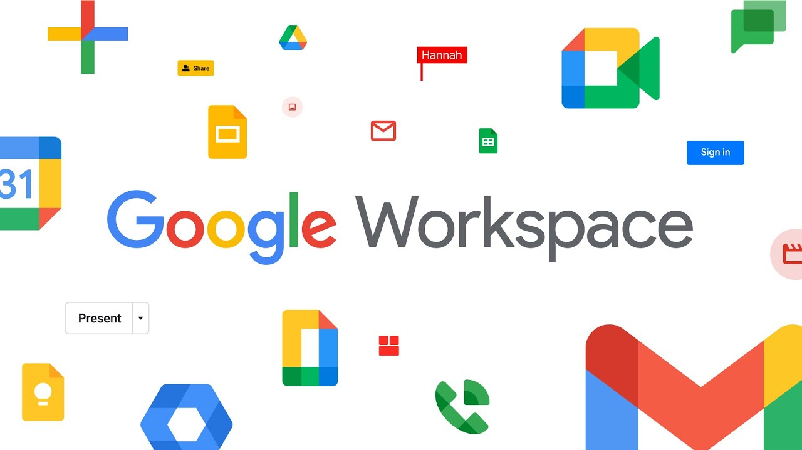

Unlimited Storage Berakhir
6 Feb 2022 
Sebuah kabar yang tidak menyenangkan hadir untuk para pengguna Google Suite for Education yang kini menjadi Google Workspace for Education.
Kebijakan Google Apps For Education (GAFE) yang telah dimulai pada Januari 2022 kemarin berisikan perubahan model penyimpanan pada Google Workspace akun lembaga pendidikan. Dengan adanya kebijakan baru ini, masing-masing sekolah dan perguruan tinggi akan memiliki sistem penyimpanan gabungan sebesar 100 TB yang nantinya akan digunakan bersama oleh seluruh pengguna. Penyimpanan gabungan ini tidak hanya terbatas pada file dari Google Drive, Gmail, dan Google Foto saja, tetapi juga Google Dokumen, Spreadsheet, Slide, Formulir, Gambar, dan Jamboard yang mulai 1 Februari 2022 ikut mengurangi kuota penyimpanannya.
Dalam email yang baru baru ini dikirimkan pada hampir seluruh pengguna Google Workspace for Education. Google mengumumkan model penyimpanan baru yang memberikan penyimpanan gabungan dasar sebesar 100 TB yang digunakan bersama-sama oleh seluruh pengguna di sekolah, madrasah dan universitas. Model ini menyediakan penyimpanan yang cukup untuk lebih dari 100 juta dokumen, 8 juta presentasi, atau 400.000 jam video. Model ini akan berlaku di seluruh edisi Google Workspace for Education bagi pelanggan lama pada bulan Juli 2022 dan bagi pelanggan baru yang mendaftar pada tahun 2022.
Dilansir dari laman Google, seluruh pengguna Google Education dihimbau untuk meninjau ruang penyimpanan yang digunakan dan menghapus file berukuran besar agar berada di bawah batas penyimpanan. Tujuan dari instruksi tersebut agar layanan-layanan ini dapat tetap diakses pada saat kebijakan baru ini diterapkan.
Keberadaan Google Drive sendiri sangat membantu mahasiswa untuk menyimpan berbagai berkas perkuliahan seperti dokumen tugas, presentasi, makalah, jurnal, dan file-file lainnya. Penyimpanan file pada Google Drive dinilai lebih aman, praktis, dan efisien, serta lebih mudah dalam mengakses file yang disimpan. Peluang kehilangan file juga jauh lebih kecil dibandingkan menyimpan file di dalam flashdisk yang cukup rawan hilang ataupun terselip. Tidak hanya sekadar tempat untuk menyimpan file, Google Drive juga digunakan sebagai platform berbagi dan berkolaborasi dengan orang-orang tertentu sehingga dapat mengedit file secara bersama-sama. Hasil pengeditan tersebut pun langsung tersimpan secara otomatis pada Google Drive. Tentunya, hal tersebut sangat bermanfaat bagi mahasiswa, khususnya dalam mengerjakan tugas berkelompok di situasi serba online ini.